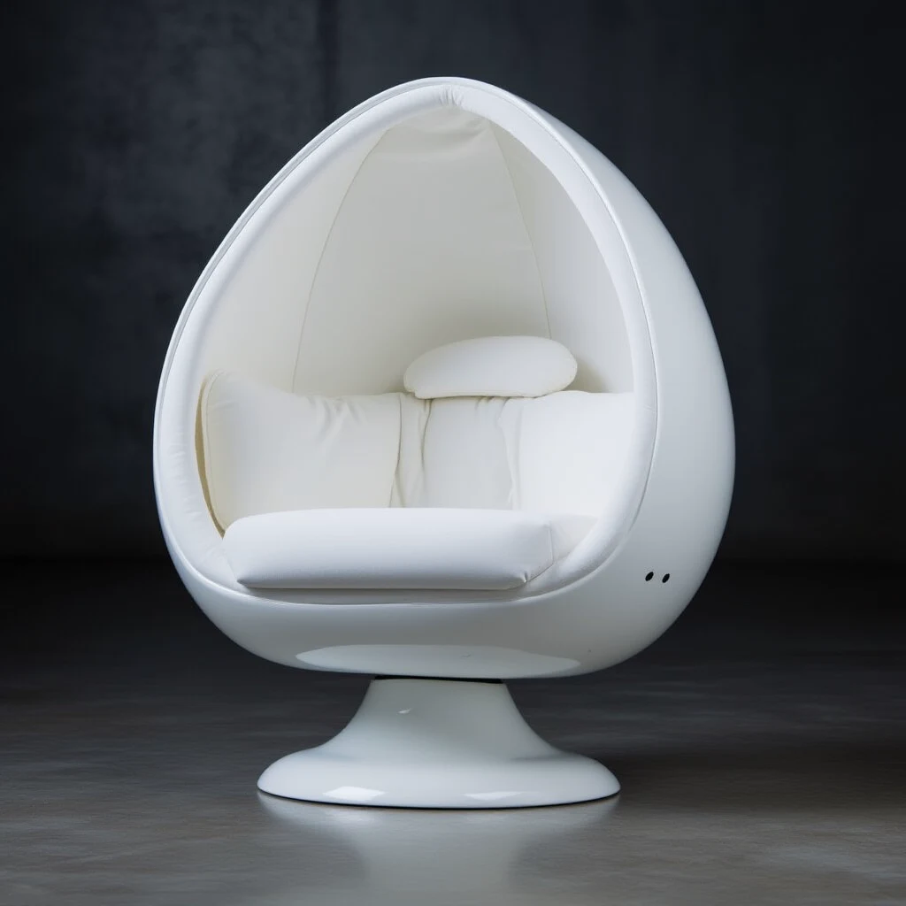
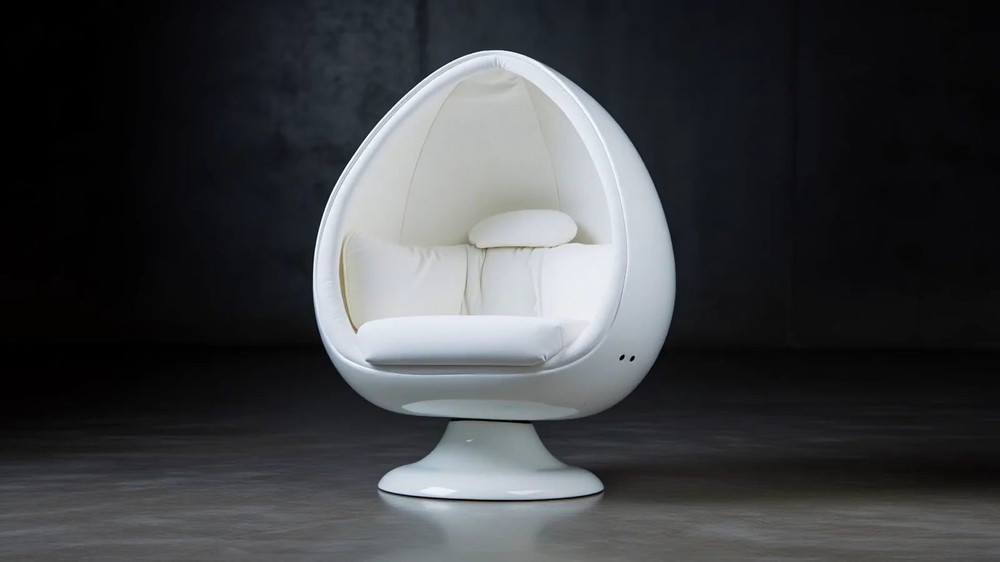

01Four speakers.
Sound architecture
Four speakers.
One personal field.
Audiophile-grade drivers and advanced signal processing create a binaural 2.1 soundscape around the seated listener.

SoloDome Classic
Our signature model brings studio-quality listening and made-to-order craftsmanship into a compact architectural form.

Interactive product exploration
Drag the SoloDome directly to control the rotation. Scroll or pinch to zoom, then pan across the materials and construction details.

The displayed angle follows your drag distance and stops the moment you release.
Static gallery fallback
Customers who cannot use the interactive viewer can inspect the SoloDome through this standard gallery.
Designed from the listener outward
The SoloDome form places speakers and low-frequency drivers around the listener at controlled distances. Upholstered surfaces create comfort and intimacy while the shell gives the system its unmistakable architectural silhouette.

Near-field immersion
Music arrives with clarity, separation and weight—without asking the entire room to become a listening room.
Sound architecture
Audiophile-grade drivers and advanced signal processing create a binaural 2.1 soundscape around the seated listener.
Signal control
DSP-led tuning shapes imaging and response for near-field listening, while optional custom curves can be developed around music style or professional use.

Personal expression
Choose exterior paint, interior upholstery and optional artwork with guidance from a SoloDome designer.

Technical specifications
Professional options

Balanced professional connections for studio equipment.

Hi-fi connectivity for home audio systems.

A sound profile tailored to your music or application.
Created around you
Select your model, finish, upholstery and professional audio options. Every SoloDome is handcrafted to order in California.
Configure your SoloDome ↗